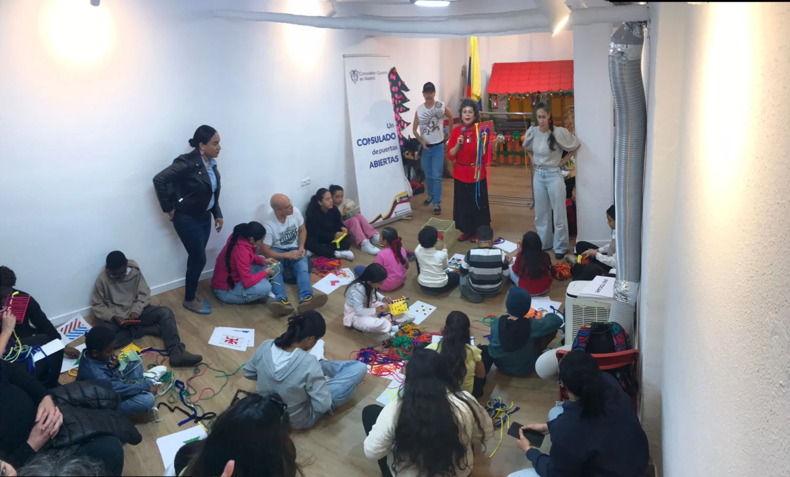
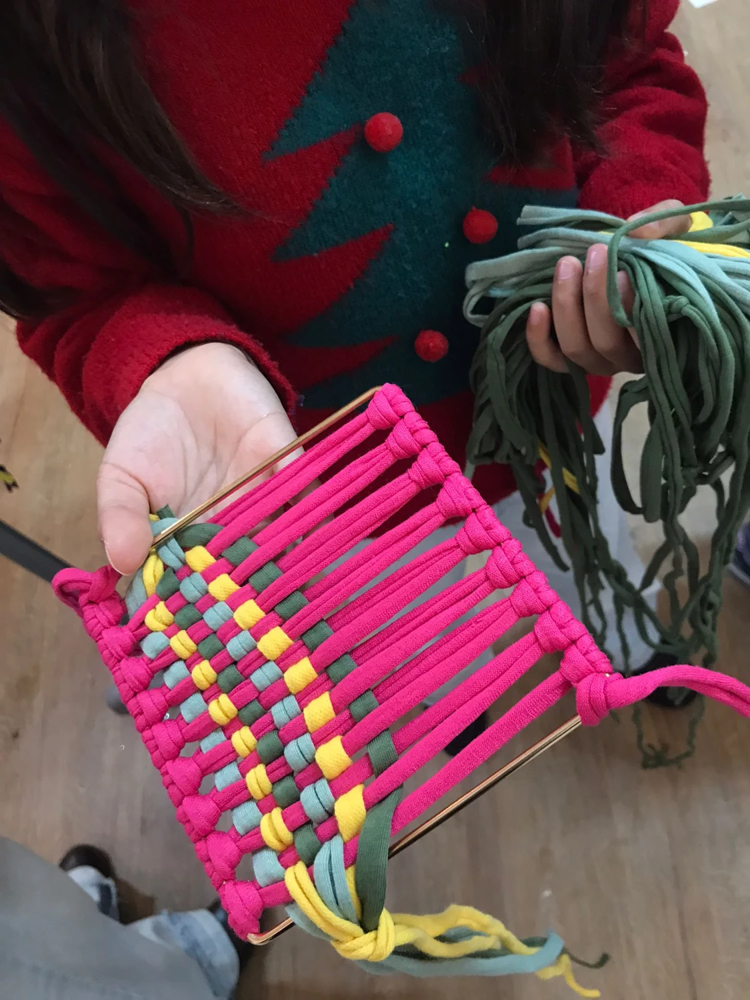
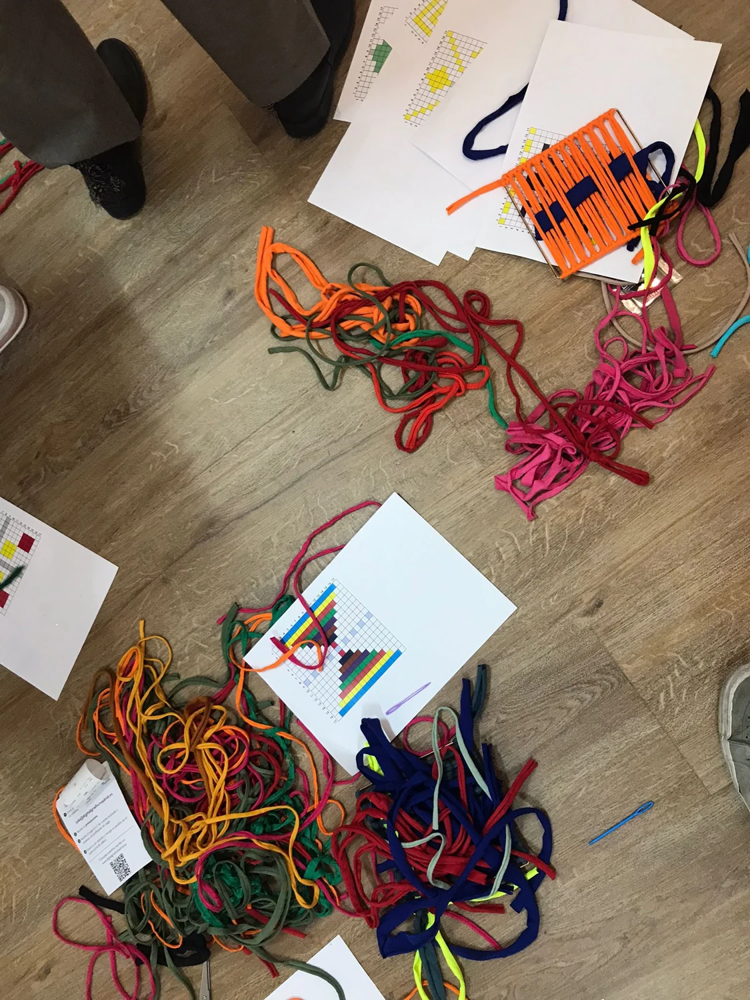
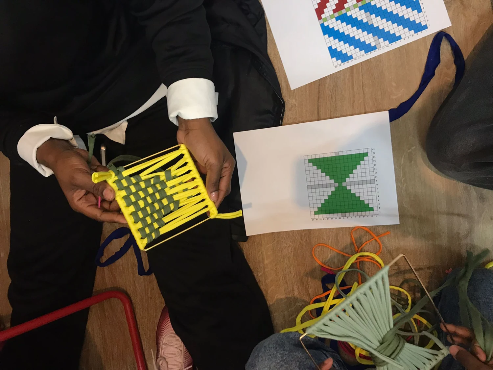
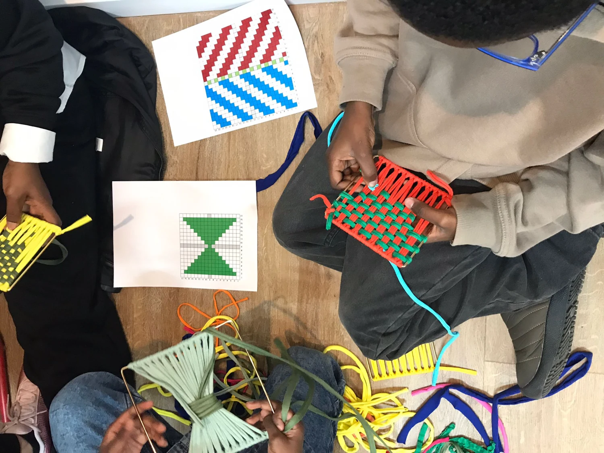
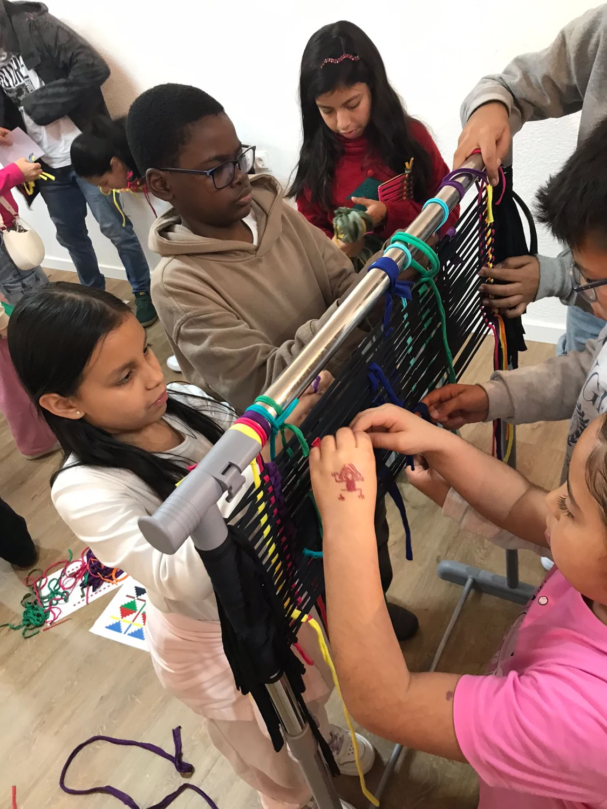
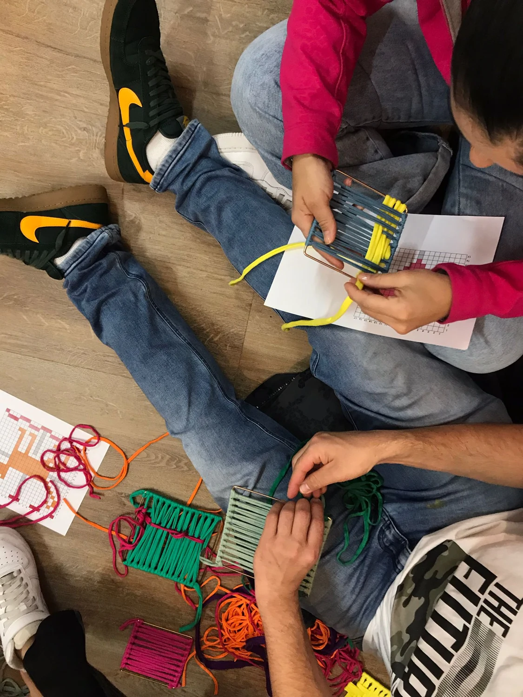
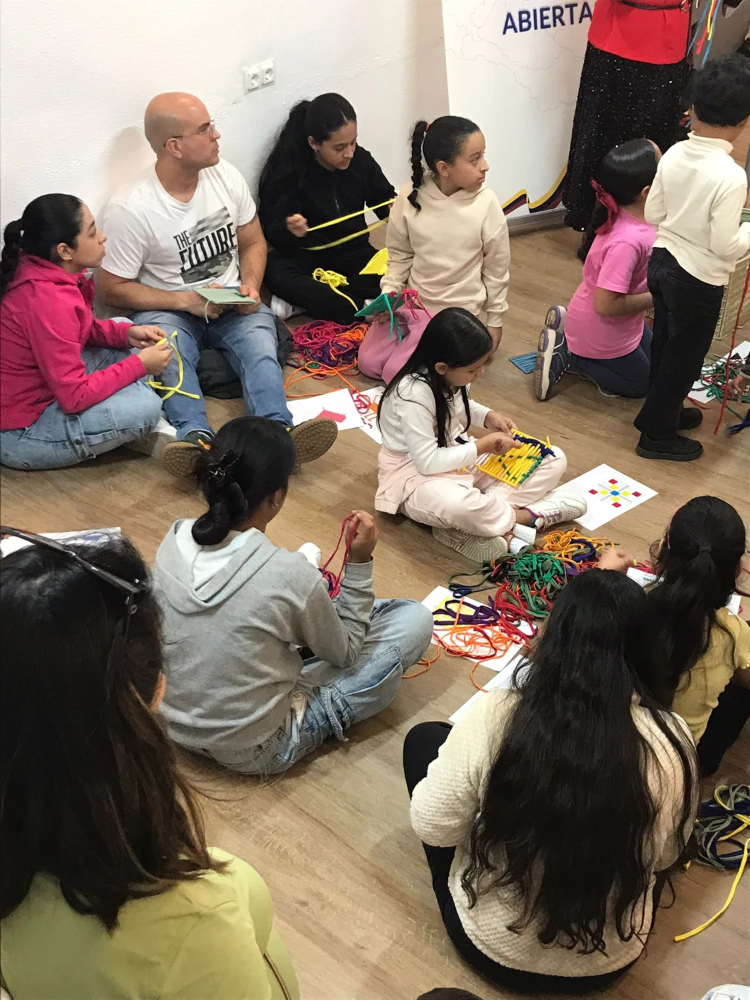

El origen del proyecto · Memoria de realización
Tejiendo Raíces
Ancestrales.
Taller realizado para el Consulado de Colombia en diciembre de 2025. Una experiencia de mediación textil, patrimonio y comunidad desarrollada por Carolina Quintero Arboleda / Coreka.

Lo que se realizó
El patrimonio,
entre las manos.
La memoria describe un taller participativo de observación, interpretación y tejido. A partir de referencias geométricas, cada participante eligió colores y composición y trabajó una pequeña pieza con trapillo reciclado.
Las fotografías muestran referencias impresas, pequeños soportes de tejido y una trama de mayor formato construida entre varias personas.
La metodología
- Observar: mirar una referencia y reconocer formas.
- Interpretar: elegir colores y trasladar una composición a una retícula.
- Tejer: construir la pieza con las manos.
- Compartir: poner en relación el trabajo propio y la trama común.
La memoria vincula la actividad con referencias visuales Muisca, Tayrona, Quimbaya, San Agustín, Zenú y Nariño. Las piezas infantiles son interpretaciones personales; no se presentan como reproducciones certificadas de tejidos tradicionales.
Archivo fotográfico del taller
Así tomó forma
el encuentro.
Selección de fotografías propias localizadas en el archivo del proyecto. Los pies describen lo que se observa, sin atribuir resultados o actividades que las imágenes no documentan.







Lo que permanece
Una pieza propia.
Una trama común.
El archivo permite ver la relación entre los patrones y las piezas individuales, la diversidad de combinaciones de color y el trabajo compartido alrededor del telar.
La memoria sitúa el tejido como herramienta de mediación y encuentro entre edades, con reutilización de material y creación colectiva.
Continuidad para futuros talleres
Del cuento existente
a la experiencia interactiva.
El hilo mágico de los continentes reúne el cuento, el taller infantil y una experiencia interactiva para explorar los textiles a través de la lectura, el juego y la creación.
La versión interactiva amplía la propuesta para futuras sesiones. Las fotografías de esta página documentan el trabajo manual del taller de 2025.
Documentación del archivo
Memoria: «Tejiendo Raíces Ancestrales. Proyecto para el Consulado de Colombia · Diciembre 2025», con firma de Carolina Quintero Arboleda / Coreka. Fotografías: carpeta «taller infantil consulado de colombia» del archivo facilitado para este proyecto.
La propuesta previa del archivo incluía otras actividades y referencias a otra fecha. Esta página se apoya en la memoria de realización y en las fotografías de la sesión, sin trasladar automáticamente lo previsto al relato de lo realizado.
Consultar la memoria documental ↗